Online Transaction Processing (OLTP)
- OLTP - designed for frequent interactive use and optimizes many random reads and writes with low latency
- and used in production
- each of these reads and writes is a result of some transaction carried out by a user
- production means app or business (opposed to internal use / analytics)
- 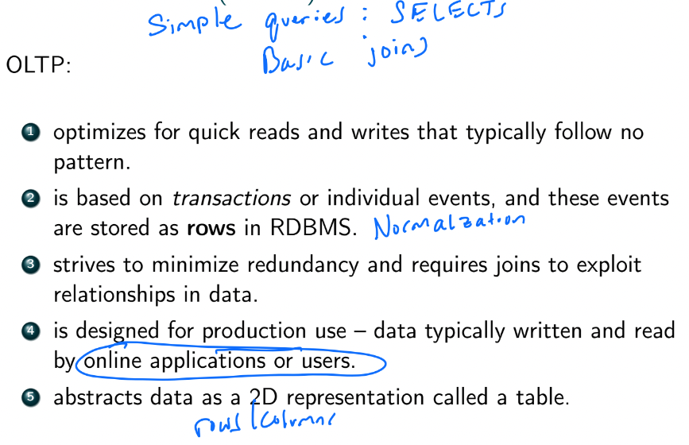
- Postgres and other RDBMS are OLTP
Online Analytical Processing (OLAP)
- not meant to be accessed in production, and only by internal users
- read-only
- optimized for very fast, low latency reads
- random or incremental writes are slow (so better to write in batch)
- data in OLAP are usually aggregated or precomputed data
- easy to SELECT from and read
- dimensions (groups) and aggregate function can be specified a priori by a data engineer, or automatically inferred by the system to make all possible groups (2n dimensions)
- data in OLAP can also be exploded (denormalized) tables for fast reads
- joins are computed as the data is inserted
- one place where denormalized tables are good
- data might be slightly out-of-date
- users include some negineers, data scientists, business analysts, and other systems
- users do NOT write ad hoc (randomly) into the system like OLTP
- typically data is loaded into the data warehouse using an ETL job during low usage period (overnight)
- extract from DB, transform, then load into DW
- extraction from DB can be very costly on the DB
- if production DB, may cause app to go down
- sol:
-
- run ETL against a replica
-
- dual writes: on each write to the DB write to the replica
- 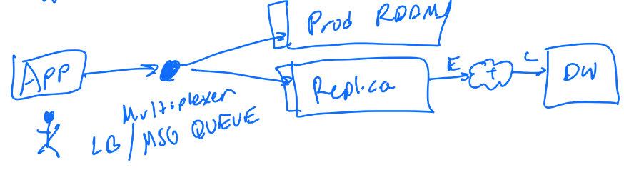
- ETL either transfer all of data or only the new data since last update
- note: OLAP and DW is completely different system than RDBMS/OLTP (diff use cases)
- but both still typically use SQL
- use cases:
- conceptually OLAP is visualized as a cube
- but user still sees and works with tables
- 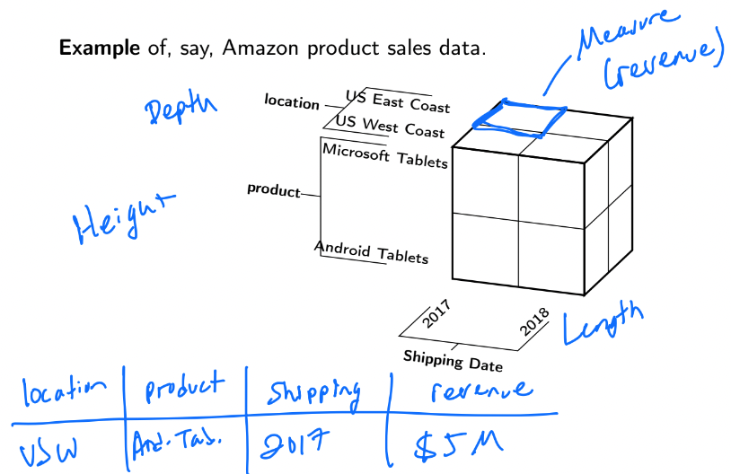
- in reality there is usually >3 dimensions, resulting in a hypercube
- 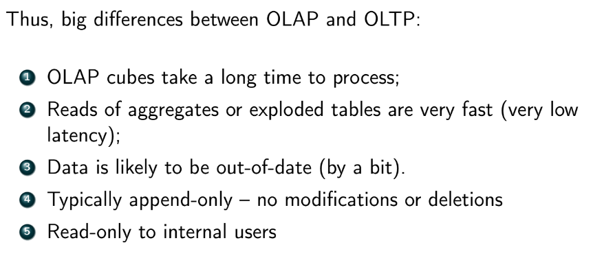
- 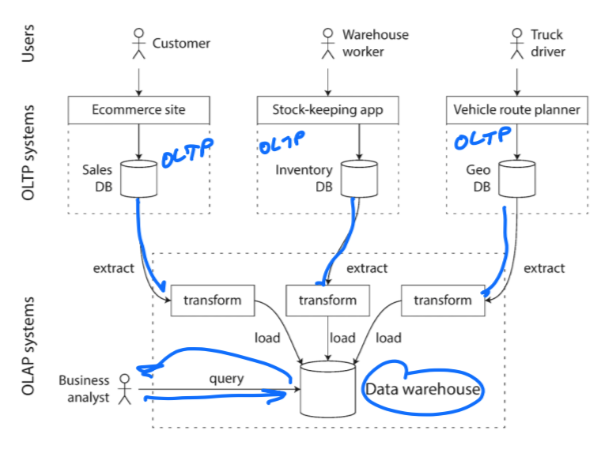
OLAP Operations
- Slice
- Dice
- typically the distinction between slice and dice are rarely made
- usually only the term "slice" is used
- Rollup
- Drill Down
- 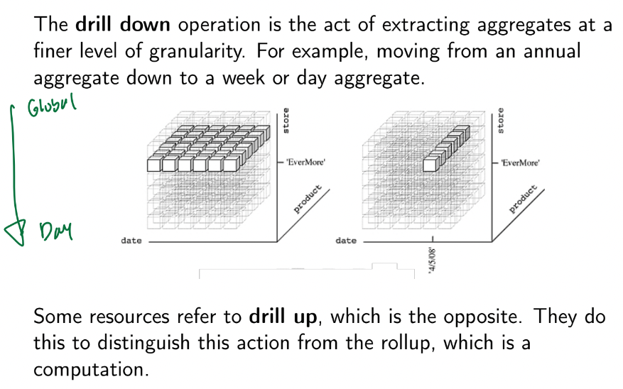
- drill down thru hierarchies to a finer one
- Pivot
- 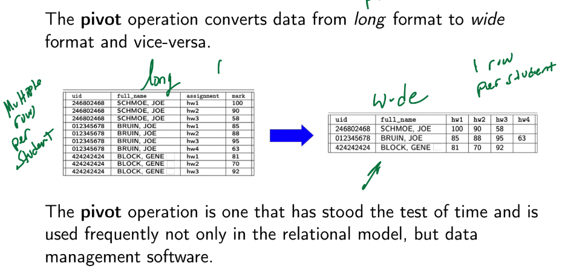
- wide format - involves multiple columns
- pros:
- less redundancy
- easy to understand
- common in spreadsheets
- cons:
- NULLs
- format is inflexible
- e.g. have to alter table if we add HWs
- long format
- common in software engineering
- pros:
- flexible (easy to add another HW)
- no NULLs
- cons:
- redundancy
- harder to understand
- long to wide conversion
- wide to long conversion
Schemas in Data Warehouses
- types of tables in DW
- fact table - contains quantitative data to be analyzed
- typically denormalized
- e.g. trainsuid (key), revenue
- dimension table - contains data about attributes of each of these facts
- e.g. customer info for transaction, metadata
- Star Schema
- contains a single fact table and several dimension tables that must be joined to it to get a result
- 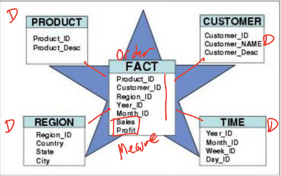
- Snowflake Schema
- has a central fact table, and several dimension tables that must be joined to each other to get a full result / describe the fact
- 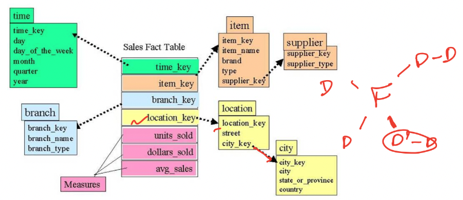
- Galaxy/Constellation Schema
- contains multiple fact tables that share some dimension tables among them
- 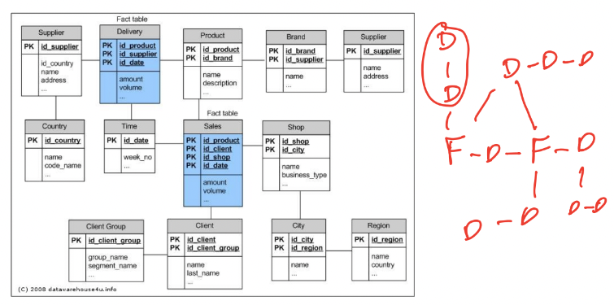
Summary of OLAP
Data System Architecture
- usually there are multiple copies of the same database
- most commonly:
- production database - for apps, not humans
- development database - used to test new features or process diagnostics
- a replica for heavy reads
- synced with either a nightly job (ETL), a message bus that multiplexes data ops, or using advanced replication options in RDBMS (e.g. PostregreSQL supports replication)
- 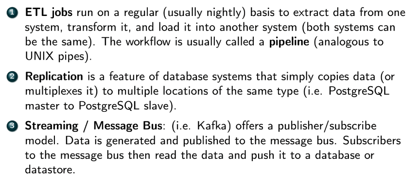
- 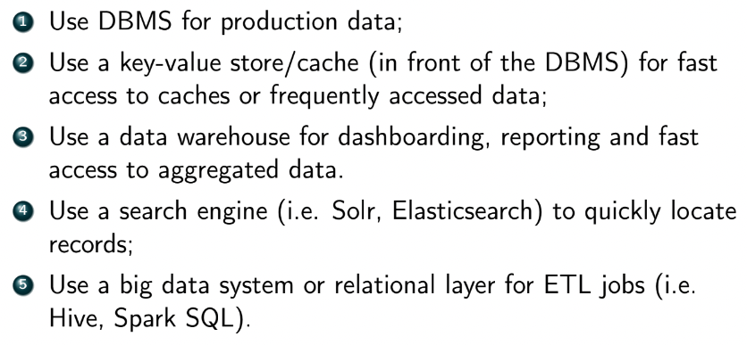
Data Lakes
- an architecture where data is stored in multiple data storage systems and in different formats
- can be queried from a single system
- an alternative to DW
- do not require up-front effort to preprocess data, but more effort when creating queries
- 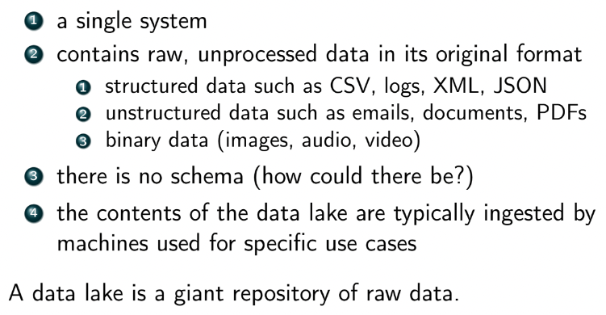
- Hadoop Distributed File System (HDFW)
- the most successful implementation of data lake
- highly scalable distributed file system that allows user to store any kind of raw data
- adding more storage via disks/nodes is easy
- has redundancy and authorization model
- allows multiple nodes to read data from it
- powers Hadoop Map-Reduce
- a storage option for Spark